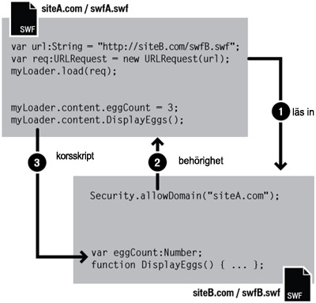

| Paket | flash.system |
| Klass | public final class Security |
| Arv | Security |
| Språkversion: | ActionScript 3.0 |
| Körningsmiljöversioner: | AIR 1.0, Flash Player 9, Flash Lite 4 |
 Dölj ärvda publika egenskaper
Dölj ärvda publika egenskaper Visa ärvda publika egenskaper
Visa ärvda publika egenskaper| Egenskap | Definieras med | ||
|---|---|---|---|
 | constructor : Object
En referens till klassobjektet eller konstruktorfunktionen för en given objektinstans. | Object | |
| exactSettings : Boolean [statisk]
Bestämmer hur Flash Player eller AIR väljer vilken domän som ska användas för vissa innehållsinställningar, inklusive inställningar för kamera- och mikrofonbehörighet, lagringskvoter och lagring av beständiga delade objekt. | Security | ||
| pageDomain : String [statisk] [skrivskyddad]
Domändelen av HTML-sidan med swf-filen. | Security | ||
| sandboxType : String [statisk] [skrivskyddad]
Anger den typ av säkerhetssandlåda som den anropande filen körs i. | Security | ||
| Metod | Definieras med | ||
|---|---|---|---|
[statisk]
Gör att SWF-filer i de identifierade domänerna får åtkomst till objekt och variabler i den SWF-fil som innehåller anropet till allowDomain(). | Security | ||
[statisk]
Gör att SWF-filer och HTML-filer i de identifierade domänerna kan använda objekt och variabler i den anropande SWF-filen, vilken är tillgänglig genom protokollet HTTPS. | Security | ||
|
Anger om det finns en egenskap angiven för ett objekt. | Object | |
|
Anger om en instans av klassen Object finns i prototypkedjan för objektet som anges som parameter. | Object | |
[statisk]
Letar efter en principfil på den plats som anges av url-parametern. | Security | ||
|
Anger om den angivna egenskapen finns och är uppräkningsbar. | Object | |
|
Anger tillgänglighet för en dynamisk egenskap för slingåtgärder. | Object | |
[statisk]
Visar panelen Säkerhetsinställningar i Flash Player. | Security | ||
|
Returnerar det här objektets strängrepresentation, formaterad i enlighet med språkspecifika konventioner. | Object | |
|
Returnerar det angivna objektets strängbeteckning. | Object | |
|
Returnerar det angivna objektets primitiva värde. | Object | |
| Konstant | Definieras med | ||
|---|---|---|---|
| APPLICATION : String = "application" [statisk]
Filen körs i ett AIR-program och den installerades med paketet (AIR-filen) för det programmet. | Security | ||
| LOCAL_TRUSTED : String = "localTrusted" [statisk]
Filen är en lokal fil som har registrerats som tillförlitlig av användaren, antingen med Inställningshanteraren i Flash Player eller med FlashPlayerTrust-konfigurationsfilen. | Security | ||
| LOCAL_WITH_FILE : String = "localWithFile" [statisk]
Filen är en lokal fil som inte har registrerats som tillförlitlig av användaren och den är inte en SWF-fil som har publicerats med en nätverksbeteckning. | Security | ||
| LOCAL_WITH_NETWORK : String = "localWithNetwork" [statisk]
Filen är en lokal fil som inte har registrerats som tillförlitlig av användaren och den är en SWF-fil som har publicerats med en nätverksbeteckning. | Security | ||
| REMOTE : String = "remote" [statisk]
Filen kommer från en Internet-URL och fungerar enligt domänbaserade sandlåderegler. | Security | ||
exactSettings | egenskap |
exactSettings:Boolean| Språkversion: | ActionScript 3.0 |
| Körningsmiljöversioner: | AIR 1.0, Flash Player 9, Flash Lite 4 |
Bestämmer hur Flash Player eller AIR väljer vilken domän som ska användas för vissa innehållsinställningar, inklusive inställningar för kamera- och mikrofonbehörighet, lagringskvoter och lagring av beständiga delade objekt. Om du vill att SWF-filen ska använda samma inställningar som i Flash Player 6 anger du exactSettings till false.
I Flash Player 6 baserades domänen som används för dessa spelarinställningar på den avslutande delen i SWF-filens domän. Om en SWF-fils domän består av mer än två segment, t.ex. www.example.com tas det första segmentet bort ("www"), och den återstående delen används: example.com. I Flash Player 6 används därför example.com som domän för både www.example.com och store.example.com med de här inställningarna. På samma sätt används example.co.uk som domän för både www.example.co.uk and store.example.co.uk med de här inställningarna. I Flash Player 7 och senare väljs spelarinställningar som standard i enlighet med en SWF-fils exakta domän. En SWF-fil från www.example.com använder då spelarinställningarna för www.example.com, och en SWF-fil från store.example.com använder spelarinställningarna för store.example.com.
Om Security.exactSettings är inställt på true använder Flash Player eller AIR exakta domäner för spelarinställningar. Standardvärdet för exactSettings är true. Om du ändrar exactSettings från standardvärdet gör du det innan det inträffar några händelser som kräver att Flash Player eller AIR väljer spelarinställningar, till exempel med en kamera eller mikrofon eller genom att hämta ett beständigt delat objekt.
Om du tidigare har publicerat en SWF-fil i version 6 och skapat beständiga delade objekt från den, och du nu behöver hämta dessa beständiga objekt från den filen när du har överfört den till version 7 eller senare, eller från en annan SWF-fil i version 7 eller senare, måste du ställa in Security.exactSettings på false innan du anropar SharedObject.getLocal().
Implementering
public static function get exactSettings():Boolean public static function set exactSettings(value:Boolean):voidUtlöser
SecurityError — I ett Flash Player- eller AIR-program har värdet för exactSettings redan använts minst en gång i ett beslut om spelarinställningar.
|
pageDomain | egenskap |
pageDomain:String [skrivskyddad] | Språkversion: | ActionScript 3.0 |
| Körningsmiljöversioner: | Flash Player 10.3, AIR 2.7 |
Domändelen av HTML-sidan med swf-filen.
Av säkerhetsskäl returnerar metoden inte fullständig URL utan endast siddomänen, till exempel http://www.exempel.se. Om den här SWF-filen inte finns på en HTML-sida eller om den inte har åtkomst till siddomänen av säkerhetsskäl, kommer den här egenskapen att returnera strängen, undefined.
Implementering
public static function get pageDomain():StringsandboxType | egenskap |
sandboxType:String [skrivskyddad] | Språkversion: | ActionScript 3.0 |
| Körningsmiljöversioner: | AIR 1.0, Flash Player 9, Flash Lite 4 |
Anger den typ av säkerhetssandlåda som den anropande filen körs i.
Security.sandboxType har något av följande värden:
remote(Security.REMOTE) – filen kommer från en Internet-URL och fungerar enligt domänbaserade sandlåderegler.localWithFile(Security.LOCAL_WITH_FILE) – filen är en lokal fil som inte har registrerats som tillförlitlig av användaren och som inte är en SWF-fil som har publicerats med en nätverksbeteckning. Filen kan läsa från lokala datakällor men kan inte kommunicera med Internet.localWithNetwork(Security.LOCAL_WITH_NETWORK) – SWF-filen är en lokal fil som inte har registrerats som tillförlitlig av användaren och som har publicerats med en nätverksbeteckning. SWF-filen kan kommunicera med Internet men kan inte läsa från lokala datakällor.localTrusted(Security.LOCAL_TRUSTED) – filen är en lokal fil som har registrerats som tillförlitlig av användaren, antingen med Inställningshanteraren i Flash Player eller med FlashPlayerTrust-konfigurationsfilen. Filen kan läsa från lokala datakällor och kommunicera med Internet.application(Security.APPLICATION) – filen körs i ett AIR-program och den installerades med paketet (AIR-filen) för det programmet. Som standard kan filer i programsandlådan i AIR utföra korsskriptning för alla filer från alla domäner (även om filer utanför programsandlådan i AIR kanske inte tillåts utföra korsskriptning för AIR-filen). Som standard kan filer i sandlådan application i AIR läsa in innehåll och data från alla domäner.
Mer information om säkerhet finns i avsnittet Security på Flash Player Developer Center.
Implementering
public static function get sandboxType():StringRelaterade API-element
allowDomain | () | metod |
public static function allowDomain(... domains):void| Språkversion: | ActionScript 3.0 |
| Körningsmiljöversioner: | AIR 1.0, Flash Player 9, Flash Lite 4 |
Gör att SWF-filer i de identifierade domänerna får åtkomst till objekt och variabler i den SWF-fil som innehåller anropet till allowDomain().
Obs! Om den här metoden anropas från kod i programsandlådan i AIR genereras ett SecurityError-undantag. Innehåll utanför säkerhetsdomänen application kan inte direkt utföra korsskriptning för innehåll i sandlådan application. Innehåll utanför sandlådan application kan däremot kommunicera med innehåll i säkerhetssandlådan application med hjälp av sandlådebryggor.
Om två SWF-filer opererar från samma domän, t.ex. http://mysite.com/swfA.swf och http://mysite.com/swfB.swf, kan swfA.swf undersöka och ändra variabler, objekt, egenskaper, metoder och så vidare i swfB.swf och swfB.swf kan göra detsamma för swfA.swf. Detta kallas korsfilmskriptning eller korsskriptning.
Om två SWF-filer opererar från olika domäner, t.ex. http://siteA.com/swfA.swf och http://siteB.com/siteB.swf tillåts inte swfA.swf att skripta swfB.swf och swfB.swf tillåts inte skripta swfA.swf. En SWF-fil ger SWF-filer från andra domäner behörighet genom att anropa Security.allowDomain(). Detta kallas korsdomänsskriptning. Genom att anropa Security.allowDomain("siteA.com") ger siteB.swf siteA.swf behörighet att skripta den.
I alla korsdomänssituationer är det viktigt att veta vilken sida som är vilken. I beskrivningarna här kommer sidan som utför korsskriptningen att kallas den anslutande parten (vanligtvis den anslutande SWF-filen) och den andra sidan kallas målparten (vanligtvis SWF-filen). När siteA.swf skriptar siteB.swf, är siteA.swf den anslutande parten och siteB.swf målparten.

Korsdomänsbehörigheter som upprättas med allowDomain() är asymmetriska. I föregående exempel kan siteA.swf skripta siteB.swf, men siteB.swf kan inte skripta siteA.swf eftersom siteA.swf inte har anropat allowDomain() för att ge SWF-filer på siteB.com behörighet att skripta den. Du kan ställa in symmetrisk behörighet genom att låta båda SWF-filerna anropa allowDomain().
Flash Player skyddar SWF-filer från korsdomänsskriptning från andra SWF-filer och från korsdomänsskriptning från HTML-filer. Skriptning från HTML till SWF kan ske med äldre webbläsarfunktioner som SetVariable eller återanropsfunktioner som upprättas via ExternalInterface.addCallback(). När skriptning från HTML till SWF går över domäner, måste SWF-målfilen anropa allowDomain(), precis som när den anslutande parten är en SWF-fil, annars misslyckas åtgärden.
Att en IP-adress anges som parameter till allowDomain() innebär inte att alla parter från den angivna IP-adressen får åtkomst. I stället får bara de parter åtkomst som lästes in genom att IP-adressen angavs i deras URL-adresser i stället för med ett domännamn som mappar till IP-adressen.
Versionsspecifika skillnader
Säkerhetsreglerna för korsdomänssäkerhet har utvecklats från version till version. I följande tabell sammanfattas skillnaderna.
| Den senaste SWF-versionen som användes i en korsskriptning | Behövs allowDomain()? | Behövs allowInsecureDomain()? | Vilken SWF-fil måste anropa allowDomain() eller allowInsecureDomain()? | Vad kan anges i allowDomain() eller allowInsecureDomain()? |
|---|---|---|---|---|
| 5 eller tidigare | Nej | Nej | Ej tillämpligt | Ej tillämpligt |
| 6 | Ja, om huvuddomänerna inte matchar | Nej | SWF-målfilen eller någon annan SWF-fil i samma huvuddomän som SWF-målfilen |
|
| 7 | Ja, om domänerna inte matchar exakt | Ja, om åtkomst från HTTP till HTTPS görs (även om domänerna matchar exakt) | SWF-målfilen eller någon annan SWF-fil i exakt samma domän som SWF-målfilen |
|
| 8 eller senare | Ja, om domänerna inte matchar exakt | Ja, om åtkomst från HTTP till HTTPS görs (även om domänerna matchar exakt) | SWF-filen |
|
Versionerna som styr beteendet för Flash Player är SWF-filversioner (den publicerade versionen av en SWF-fil), inte versionen av själva Flash Player. Om t.ex. en SWF-fil som publicerats för version 7 spelas upp i Flash Player 8, tillämpas beteendet som gäller för version 7. Med denna rutin är man säker på att uppgraderingarna inte ändrar beteendet hos Security.allowDomain() i utvecklade SWF-filer.
Versionskolumnen i föregående tabell visar den senaste SWF-versionen som användes i en korsskriptning. Flash Players beteende avgörs utifrån den senaste versionen av den anslutande SWF-filens version eller SWF-målfilens version.
I följande stycken finns mer information om säkerhetsändringar i Flash Player som påverkar Security.allowDomain().
Version 5. Det finns inga begränsningar för korsdomänsskriptning.
Version 6. Säkerhet för korsdomänsskriptning införs. Som standard tillåter inte Flash Player korsdomänsskriptning, men Security.allowDomain() kan tillåta det. Flash avgör om två filer finns i samma domän genom att använda varje fils huvuddomän, som är det exakta värdnamnet från filens URL minus det första segmentet, ned till minst två segment. Huvuddomänen för www.mysite.com är mysite.com. I det här exemplet skulle SWF-filer från www.mysite.com och store.mysite.com tillåtas skripta varandra utan att anropa Security.allowDomain().
Version 7. Huvuddomänsmatchning ändras till exakt domänmatchning. Två filer får bara skripta varandra om värdnamnen i deras URL-adresser är identiska. I annat fall krävs ett anrop till Security.allowDomain(). Som standard tillåts inte längre att filer som lästs in från osäkra URL-adresser (inte HTTPS) skriptar filer som lästs in från säkra URL-adresser (HTTPS) även om filerna läses in från exakt samma domän. Begränsningen hjälper till att skydda HTTPS-filer eftersom filer som inte är i HTTPS är sårbara för ändringar under nedladdningen och en icke-HTTPS-fil som ändrats i syfte att skada kan skada en HTTPS-fil som annars skulle vara immun mot sådana angrepp. Security.allowInsecureDomain() införs för att tillåta att SWF-målfiler i HTTPS inaktiverar skyddet, men Adobe rekommenderar att Security.allowInsecureDomain()inte används.
Version 8. Två huvudsakliga områden har ändrats:
- Anrop till
Security.allowDomain()tillåter nu bara korsskriptning om SWF-målfilen är den SWF-fil som anropadeSecurity.allowDomain(). En SWF-fil som anroparSecurity.allowDomain()tillåter nu bara åtkomst till sig själv. Vid anrop tillSecurity.allowDomain()i föregående versioner tilläts korsskriptning och SWF-målfilen kunde vara valfri SWF-fil i samma domän som den som anropadeSecurity.allowDomain(). Tidigare öppnade anrop tillSecurity.allowDomain()upp hela domänen för den anropande SWF-filen. - Stöd för jokervärden har lagts till med
Security.allowDomain("*")ochSecurity.allowInsecureDomain("*"). Jokerteckenvärdet (*) tillåter korsskriptning där den anslutande filen är valfri fil och kan läsas in från valfri plats. Jokertecknet är som en global behörighet. Jokerbehörighet behövs för att vissa typer av åtgärder ska kunna genomföras med de nya säkerhetsreglerna för lokala filer. För att en lokal SWF-fil med nätverksbehörighet ska kunna skripta en SWF-fil på Internet måste SWF-målfilen på Internet anropaSecurity.allowDomain("*")vilket visar att den lokala SWF-filens ursprung är okänt. (Om SWF-målfilen på Internet läses in från en HTTPS-URL-adress måste Internet-filen i stället anropaSecurity.allowInsecureDomain("*").)
I vissa fall kan följande situation uppstå: Du läser in en underordnad SWF-fil från en annan domän och vill att den ska kunna skripta den överordnade SWF-filen, men du känner inte till den underordnade SWF-filens slutliga domän. Detta kan till exempel inträffa när du använder lastbalanseringsdirigeringar eller tredjepartsservrar.
I så fall kan du använda url-egenskapen i det URLRequest-objekt som du skickar till Loader.load(). Om du exempelvis läser in en underordnad SWF-fil till en överordnad SWF-fil, kan du nå egenskapen contentLoaderInfo i Loader-objektet för den överordnade SWF-filen:
Security.allowDomain(loader.contentLoaderInfo.url)
Se till att vänta tills den underordnade SWF-filen börjar läsas in för att få rätt värde för url-egenskapen. Använd progress-händelsen för att avgöra om en underordnad SWF-fil har börjat inläsningen.
Den omvända situationen kan också uppstå, alltså att du skapar en underordnad SWF-fil och vill att den överordnade filen skriptar den, men du vet inte vilken domän den överordnade filen kommer att vara i. I så fall kan du komma åt loaderInfo-egenskapen för det visningsobjekt som är SWF-filens rotobjekt. I den underordnade SWF-filen anropar du Security.allowDomain( this.root.loaderInfo.loaderURL). Du behöver inte vänta på att den överordnade SWF-filen ska läsas in eftersom den är inläst innan den underordnade filen läses in.
Om du publicerar för Flash Player 8 eller senare kan du också hantera dessa situationer genom att anropa Security.allowDomain("*"). Det kan emellertid vara en farlig genväg eftersom det gör att den anropande SWF-filen kan kommas åt av alla andra SWF-filer från alla domäner. Oftast är det säkrare att använda egenskapen _url.
Mer information om säkerhet finns i avsnittet Security på Flash Player Developer Center.
Parametrar
... domains — En eller fler strängar eller URLRequest-objekt som namnger de domäner som du vill ha åtkomst till. Du kan ange den särskilda domänen "*" och tillåta åtkomst från alla domäner.
Att ange "*" är det enda sättet i Flash Professional att ge åtkomst till SWF-filer som inte är lokala från lokala SWF-filer som har publicerats med Använd bara nätverket för alternativet Lokal uppspelningssäkerhet i utvecklingsverktyget i Flash. Obs! Jokervärden fungerar inte för underdomäner. Du kan till exempel inte använda |
Utlöser
SecurityError — Om den här metoden anropas från kod i programsäkerhetssandlådan i AIR genereras ett SecurityError-undantag. Innehåll utanför säkerhetssandlådan application kan inte utföra korsskriptning för innehåll i säkerhetssandlådan application.
|
Relaterade API-element
allowInsecureDomain | () | metod |
public static function allowInsecureDomain(... domains):void| Språkversion: | ActionScript 3.0 |
| Körningsmiljöversioner: | AIR 1.0, Flash Player 9, Flash Lite 4 |
Gör att SWF-filer och HTML-filer i de identifierade domänerna kan komma åt objekt och variabler i den anropande SWF-filen, som är tillgänglig via HTTPS-protokollet.
Flash Player innehåller allowInsecureDomain() för att ge maximal flexibilitet, men det är inte rekommenderat att metoden anropas. Att använda HTTPS-protokoll för filer ger flera skydd för dig och dina användare. Ett av dessa skydd försvagas om du anropar allowInsecureDomain.
Obs! Om den här metoden anropas från kod i programsandlådan i AIR genereras ett SecurityError-undantag. Innehåll utanför säkerhetsdomänen application kan inte direkt utföra korsskriptning för innehåll i sandlådan application. Innehåll utanför sandlådan application kan däremot kommunicera med innehåll i säkerhetssandlådan application med hjälp av sandlådebryggor.
Den här metoden fungerar på samma sätt som Security.allowDomain() men den tillåter också åtgärder där den anslutande parten läses in med andra protokoll än HTTPS och där målparten läses in med HTTPS. I Flash Player 7 och senare tillåts inte filer som inte har HTTPS att skripta HTTPS-filer. Metoden allowInsecureDomain() tar bort denna begränsning när HTTPS-SWF-målfilen använder den.
Använd bara allowInsecureDomain() för att aktivera skriptning från filer som inte har HTTPS till HTTPS-filer. Använd den för att aktivera skriptning när den anslutande filen inte har HTTPS och HTTPS-målfilen finns i samma domän, till exempel om en SWF-fil på http://mysite.com ska skripta en SWF-fil på https://mysite.com. Använd inte den här metoden för att tillåta skriptning mellan olika filer som inte har HTTPS, mellan HTTPS-filer eller från HTTPS-filer till filer som inte har HTTPS. Använd allowDomain() för dessa situationer i stället.
allowInsecureDomain() kan äventyra säkerheten om den inte används varsamt.
Tänk på att följande information bara är ett möjligt scenario. Det är utformat för att hjälpa dig förstå allowInsecureDomain() med hjälp av ett verkligt exempel på korsskriptning. Det täcker inte alla säkerhetsaspekter och bör bara användas i informationssyfte. På Flash Player Developer Center finns omfattande information om Flash Player och säkerhet. Mer information finns i avsnittet Security på Flash Player Developer Center.
Tänk dig att du utvecklar en e-handelsplats som består av två komponenter: en katalog som inte behöver vara säker eftersom den bara innehåller offentlig information och en kundvagn/kassa som måste vara säker för att skydda användaruppgifter. Anta att du överväger att lägga upp katalogen på http://mysite.com/catalog.swf och kundvagnen på https://mysite.com/cart.swf. Ett krav för webbplatsen är att utomstående inte ska kunna stjäla användarnas kreditkortsnummer genom att utnyttja en svaghet i säkerhetsarkitekturen.
Anta att någon går in mellan servern och dina användare och försöker stjäla kreditkortsnumren som användarna anger i kundvagnsprogrammet. Denna någon kan till exempel vara en oseriös Internet-leverantör som används av några av dina användare eller en oärlig administratör på en användares arbetsplats. Det kan vara vem som helst som kan se eller ändra nätverkspaket som överförs över det publika Internet mellan användarna och servrarna. Det är inte en ovanlig situation.
Om cart.swf använder HTTPS för att överföra kreditkortsinformation till servrarna kan inte angriparen stjäla informationen direkt från nätverkspaketen eftersom HTTPS-överföringen är krypterad. Angriparen kan dock använda en annan teknik: ändra innehållet i en av dina SWF-filer när den skickas till användaren och ersätta SWF-filen med en ändrad version som överför användaruppgifterna till en annan server som ägs av angriparen.
HTTPS-protokollet förhindrar bland annat sådana "ändringsattacker" eftersom HTTPS-överföringar inte bara är krypterade, de är också skyddade mot ändringar. Om en utomstående ändrar ett datapaket märker mottagarsidan det och raderar paketet. I det fallet kan alltså inte angriparen ändra cart.swf eftersom filen skickas med HTTPS.
Anta nu att du vill att knappar i catalog.swf (som har HTTP-protokoll) ska kunna lägga till objekt i kundvagnen i cart.swf, som har HTTPS-protokoll. För att det ska gå anropar cart.swf allowInsecureDomain() så att catalog.swf kan skripta cart.swf. Denna åtgärd har oönskade konsekvenser: Nu kan en angripare ändra catalog.swf när den först laddas ned av användaren eftersom catalog.swf levereras med HTTP och inte är skyddad mot ändringar. Angriparens ändrade catalog.swf kan nu skripta cart.swf eftersom cart.swf innehåller ett anrop till allowInsecureDomain(). Den ändrade catalog.swf-filen kan använda ActionScript för att komma åt variablerna i cart.swf och därmed läsa användarens kreditkortsinformation och andra känsliga data. Den ändrade catalog.swf-filen kan sedan skicka dessa uppgifter till angriparens server.
Detta är förstås inte acceptabelt, men du vill ändå att korsskriptning ska vara möjlig mellan de två SWF-filerna på webbplatsen. Det här är två möjliga sätt att ändra den hypotetiska e-handelswebbplatsen för att undvika allowInsecureDomain():
- Låt alla SWF-filer i programmet använda HTTPS-protokollet. Det är den enklaste och mest tillförlitliga lösningen. I det scenario som beskrivs lägger du upp både catalog.swf och cart.swf med HTTPS-protokoll. När en fil som catalog.swf använder HTTP-protokoll i stället för HTTPS-protokoll kan det förbruka något mer bandbredd, belastningen på serverprocessorerna kan bli något högre och användarna kan märka att det tar lite längre tid för programmen att läsas in. Experimentera med verkliga servrar för att avgöra hur allvarliga dessa effekter blir. Oftast är de inte värre än 10–20 % vardera och ibland märks de inte alls. Du kan oftast förbättra resultatet med maskinvara eller programvara för HTTPS-acceleration på servrarna. En stor fördel med att låta alla samverkande SWF-filer använda HTTPS-protokollet är att du kan använda en HTTPS-URL som huvud-URL i användarens webbläsare utan att webbläsaren aktiverar några varningar om blandat innehåll. Dessutom visas låsikonen i webbläsaren så att användarna kan se en välbekant och tillförlitlig säkerhetsindikator.
- Använd skriptning från HTTPS till HTTP i stället för från HTTP till HTTPS. I det scenario som beskrivs kan du spara innehållet i användarens kundvagn i catalog.swf och bara låta cart.swf hantera kassaprocessen. När användaren går till kassan kan cart.swf hämta kundvagnens innehåll från ActionScript-variabler i catalog.swf. Begränsningen för skriptning från HTTP till HTTPS är asymmetrisk. Trots att en HTTP-levererad catalog.swf-fil av säkerhetsskäl inte kan tillåtas att skripta en HTTPS-levererad cart.swf-fil kan HTTPS-filen cart.swf skripta HTTP-filen catalog.swf. Den här metoden är lite vanskligare än att bara använda HTTPS. Du måste vara försiktig så att du inte litar på någon SWF-fil som levereras via HTTP eftersom sådana filer kan ändras. När cart.swf hämtar ActionScript-variabeln som beskriver kundvagnens innehåll kan ActionScript-koden i cart.swf inte lita på att värdet i variabeln har det format som förväntas. Du måste kontrollera att kundvagnens innehåll inte innehåller ogiltiga data som kan göra att cart.swf utför någon oönskad åtgärd. Du måste också räkna med risken att någon utomstående ändrar catalog.swf så att ett giltiga men felaktiga data skickas till cart.swf, till exempel kan varor läggas till i användarens kundvagn. Den vanliga kassaprocessen minskar denna risk något genom att visa kundvagnens innehåll och totalkostnad så att användaren kan godkänna dem, men risken finns ändå där.
Webbläsare har gjort skillnad på HTTPS-filer och andra filer i åratal. Scenariot som beskrivs här visar en god anledning till denna begränsning. Flash Player ger dig möjlighet att kringgå denna säkerhetsbegränsning när du måste, men tänk på konsekvenserna innan du gör det.
Mer information om säkerhet finns i avsnittet Security på Flash Player Developer Center.
Parametrar
... domains — En eller fler strängar eller URLRequest-objekt som namnger de domäner som du vill ha åtkomst till. Du kan ange den särskilda domänen "*" och tillåta åtkomst från alla domäner.
Att ange "*" är det enda sättet att ge åtkomst till SWF-filer som inte är lokala från lokala SWF-filer som har publicerats med Använd bara nätverket för alternativet Lokal uppspelningssäkerhet (Arkiv > Publiceringsinställningar > fliken Flash) i utvecklingsverktyget i Flash. Obs! Jokervärden fungerar inte för underdomäner. Du kan till exempel inte använda |
Utlöser
SecurityError — Om den här metoden anropas från kod i säkerhetssandlådan application i AIR genereras ett SecurityError-undantag. Innehåll utanför säkerhetssandlådan application kan inte utföra korsskriptning för innehåll i säkerhetssandlådan application.
|
Relaterade API-element
loadPolicyFile | () | metod |
public static function loadPolicyFile(url:String):void| Språkversion: | ActionScript 3.0 |
| Körningsmiljöversioner: | AIR 1.0, Flash Player 9, Flash Lite 4 |
Letar efter en principfil på den plats som anges av url-parametern. I Adobe AIR och Flash Player används principfiler för att fastställa om program ska kunna läsa in data från andra servrar än den egna servern. Observera att filen faktiskt inte läses in förrän det görs en nätverksbegäran som kräver en principfil, trots att metodnamnet är loadPolicyFile().
Med Security.loadPolicyFile() kan Flash Player eller AIR läsa in principfiler från vilken plats som helst, som i följande exempel:
Security.loadPolicyFile("http://www.example.com/sub/dir/pf.xml");
Detta gör att Flash Player eller AIR försöker att hämta en principfil från den angivna URL:en. All behörighet som ges av principfilen på denna plats tillämpas på allt innehåll på samma nivå eller lägre i serverns virtuella kataloghierarki.
Med föregående kod utlöser exempelvis dessa rader inget undantag:
import flash.net.*;
var request:URLRequest = new URLRequest("http://www.example.com/sub/dir/vars.txt");
var loader:URLLoader = new URLLoader();
loader.load(request);
var loader2:URLLoader = new URLLoader();
var request2:URLRequest = new URLRequest("http://www.example.com/sub/dir/deep/vars2.txt");
loader2.load(request2);
Men följande kod utlöser ett säkerhetsundantag:
import flash.net.*;
var request3:URLRequest = new URLRequest("http://www.example.com/elsewhere/vars3.txt");
var loader3:URLLoader = new URLLoader();
loader3.load(request3);
Med loadPolicyFile() kan du läsa in valfritt antal principfiler. När en begäran som kräver en principfil ska bedömas väntar Flash Player eller AIR alltid tills nedladdningen av alla principfiler har slutförts innan begäran nekas. Om ingen principfil som har angetts med loadPolicyFile() tillåter en begäran kontrollerar Flash Player eller AIR standardplatserna.
När Flash Player söker efter en huvudprincipfil väntar programmet i tre sekunder på ett svar från servern. Om inget svar kommer, förutsätts att det inte finns någon huvudprincipfil. Det finns emellertid inget standardvärde för timeout för anrop till loadPolicyFile(). Flash Player förutsätter att filen som anropas finns och väntar så länge det behövs för att läsa in den. Om du vill vara säker på att huvudprincipfilen läses in ska du därför anropa den explicit med loadPolicyFile().
Du kan inte ansluta till vanligtvis reserverade portar. Du hittar en fullständig lista över spärrade portar i avsnittet ”Begränsa nätverks-API:er” i Utvecklarhandbok för Adobe ActionScript 3.0.
Om du använder protokollet xmlsocket i kombination med ett visst portnummer kan du hämta principfiler direkt från en XMLSocket-server, vilket visas i följande exempel. Socketanslutningar underkastas inte de begränsningar angående reserverade portar som beskrivs ovan.
Security.loadPolicyFile("xmlsocket://foo.com:414");
Detta gör att Flash Player eller AIR försöker hämta en principfil från den angivna värdenheten och porten. När en anslutning till den angivna porten har upprättats skickar Flash Player eller AIR <policy-file-request />, som avslutas med en null-byte. Servern måste skicka en null-byte för att avsluta en principfil och kan därefter avsluta anslutningen. Om servern inte avslutar anslutningen gör Flash Player eller AIR det när den avslutande null-byten tas emot.
Du kan förhindra att den här metoden används av en SWF-fil genom att ställa in parametern allowNetworking i object- och embed-taggarna på den HTML-sida där SWF-innehållet finns.
Mer information om säkerhet finns i avsnittet Security på Flash Player Developer Center.
Parametrar
url:String — URL-adressen för principfilen som ska läsas in.
|
showSettings | () | metod |
public static function showSettings(panel:String = "default"):void| Språkversion: | ActionScript 3.0 |
| Körningsmiljöversioner: | AIR 1.0, Flash Player 9, Flash Lite 4 |
Visar panelen Säkerhetsinställningar i Flash Player. Den här metoden används inte för innehåll i Adobe AIR och inget händer om den anropas i ett AIR-program.
Parametrar
panel:String (default = "default")SecurityPanel.DEFAULT.
|
Relaterade API-element
APPLICATION | Konstant |
public static const APPLICATION:String = "application"| Språkversion: | ActionScript 3.0 |
| Körningsmiljöversioner: | AIR 1.0, Flash Lite 4 |
Filen körs i ett AIR-program och den installerades med paketet (AIR-filen) för det programmet. Det här innehållet finns i programresurskatalogen för AIR (där programinnehållet är installerat).
Relaterade API-element
LOCAL_TRUSTED | Konstant |
public static const LOCAL_TRUSTED:String = "localTrusted"| Språkversion: | ActionScript 3.0 |
| Körningsmiljöversioner: | AIR 1.0, Flash Player 9, Flash Lite 4 |
Filen är en lokal fil som har registrerats som tillförlitlig av användaren, antingen med Inställningshanteraren i Flash Player eller med FlashPlayerTrust-konfigurationsfilen. Filen kan läsa från lokala datakällor och kommunicera med Internet.
Relaterade API-element
LOCAL_WITH_FILE | Konstant |
public static const LOCAL_WITH_FILE:String = "localWithFile"| Språkversion: | ActionScript 3.0 |
| Körningsmiljöversioner: | AIR 1.0, Flash Player 9, Flash Lite 4 |
Filen är en lokal fil som inte har registrerats som tillförlitlig av användaren och den är inte en SWF-fil som har publicerats med en nätverksbeteckning. I Adobe AIR finns den lokala filen inte i programresurskatalogen. Sådana filer placeras i säkerhetssandlådan application. Filen kan läsa från lokala datakällor men kan inte kommunicera med Internet.
Relaterade API-element
LOCAL_WITH_NETWORK | Konstant |
public static const LOCAL_WITH_NETWORK:String = "localWithNetwork"| Språkversion: | ActionScript 3.0 |
| Körningsmiljöversioner: | AIR 1.0, Flash Player 9, Flash Lite 4 |
Filen är en lokal fil som inte har registrerats som tillförlitlig av användaren och den är en SWF-fil som har publicerats med en nätverksbeteckning. Filen kan kommunicera med Internet men kan inte läsa från lokala datakällor.
Relaterade API-element
REMOTE | Konstant |
public static const REMOTE:String = "remote"| Språkversion: | ActionScript 3.0 |
| Körningsmiljöversioner: | AIR 1.0, Flash Player 9, Flash Lite 4 |
Filen kommer från en Internet-URL och fungerar enligt domänbaserade sandlåderegler.
Relaterade API-element
click-händelse på ett Sprite-objekt kan användas för att visa panelen Lokala lagringsinställningar i Flash Player. En orange ruta läggs till på scenen med hjälp av draw(). I draw() läggs en click-händelseavlyssnare till med namnet clickHandler() som svarar på click-händelserna genom att ange att Flash Player ska öppna panelen Lokala lagringsinställningar.
package {
import flash.display.Sprite;
import flash.text.TextField;
import flash.events.*;
import flash.system.Security;
import flash.system.SecurityPanel;
public class SecurityExample extends Sprite {
private var bgColor:uint = 0xFFCC00;
private var size:uint = 100;
public function SecurityExample() {
draw();
}
private function draw():void {
var child:Sprite = new Sprite();
child.graphics.beginFill(bgColor);
child.graphics.drawRect(0, 0, size, size);
child.graphics.endFill();
child.buttonMode = true;
var label:TextField = new TextField();
label.text = "settings";
label.selectable = false;
label.mouseEnabled = false;
child.addChild(label);
child.addEventListener(MouseEvent.CLICK, clickHandler);
addChild(child);
}
private function clickHandler(event:MouseEvent):void {
Security.showSettings(SecurityPanel.LOCAL_STORAGE);
}
}
}
Tue Jun 12 2018, 01:40 PM Z